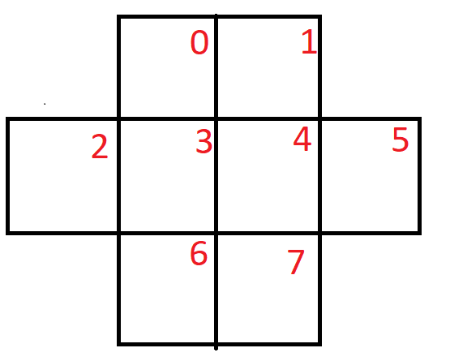
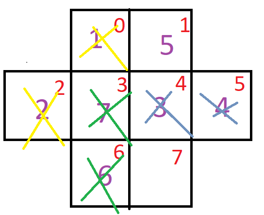

Given the "cross" below, place numbers (integers 1-8) such that no two adjacent squares contain consective integers.
Note: adjacent in this case means either vertically, horizontally, or diagonally.

Example of a blank cross. The red number indicates the position in the cross.

Example of a cross that has faults horizontally, vertically, and diagonally.
Just like in the 8 queens problem we are going to be using backtracking.
Algorithm:
Start with an array of all 1s. Though, as we move from lower indexs to higher indexs, we will treat lower indexs as the only numbers that have been placed on the cross.
While we have not backtracked off the board:
If during this process, we move beyond the last index of the cross, print the cross.
If during this process, the current index exceeds 8, reset the value back to 1 and backtrack.
If the current number is valid (again, only checking indices lower than the current index), move to the next index in the cross.
if the current number is not valid, increment the current number.